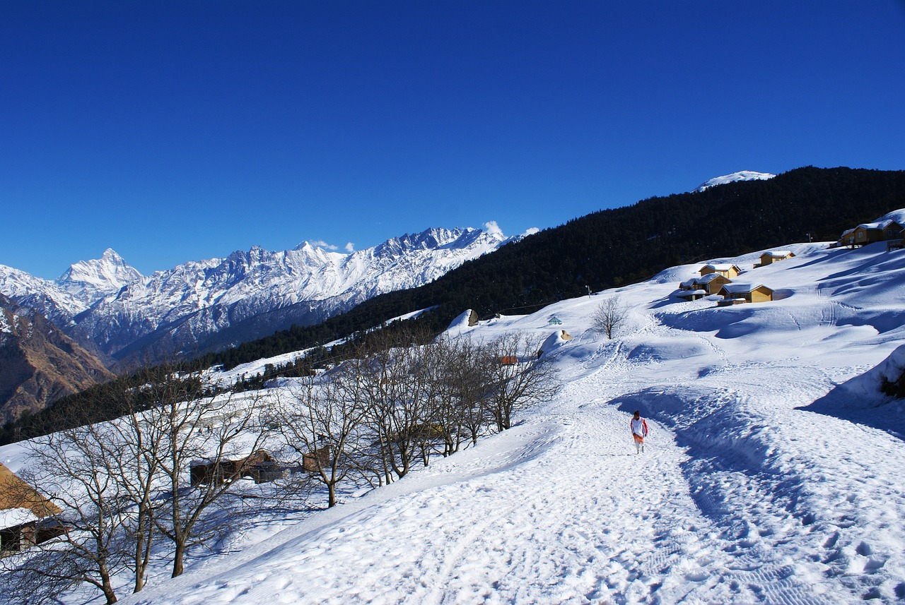
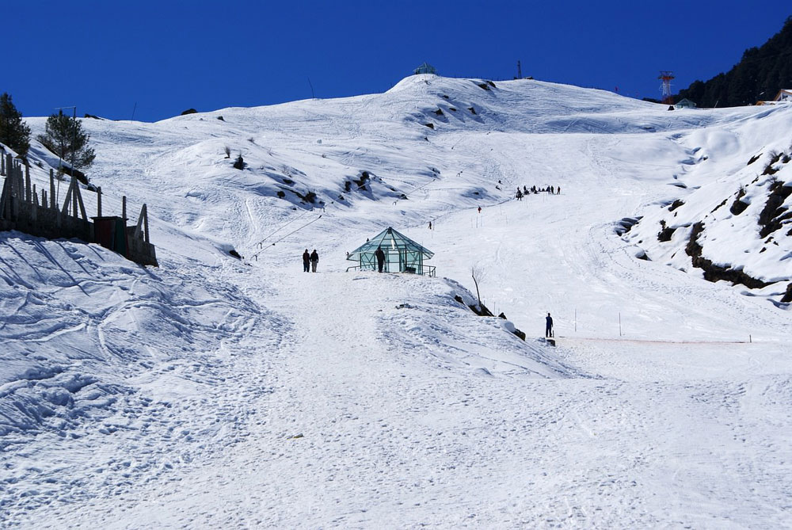
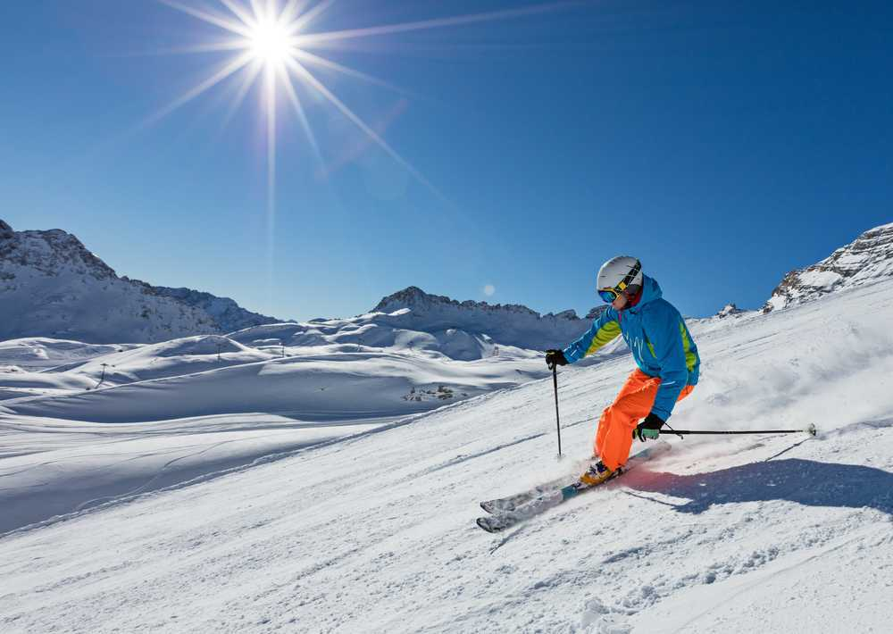

Featured Photos




Auli, located in the Chamoli district of Uttarakhand, is a popular skiing destination in India. Situated at an elevation of approximately 2,800 meters (9,200 feet) to 3,050 meters (10,010 feet) above sea level, Auli offers panoramic views of the Himalayan peaks including Nanda Devi, Trishul, and Mana Parvat. The slopes of Auli are renowned for their powdery snow and are ideal for skiing enthusiasts, both amateurs and professionals. The Auli Ski Resort is equipped with modern facilities and hosts various skiing events and competitions. Apart from skiing, Auli also offers opportunities for trekking, camping, and enjoying the serene beauty of the surrounding mountains. Visitors to Auli can also take a cable car ride, known as the Auli Ropeway, to reach the top and enjoy breathtaking views of the Himalayas.